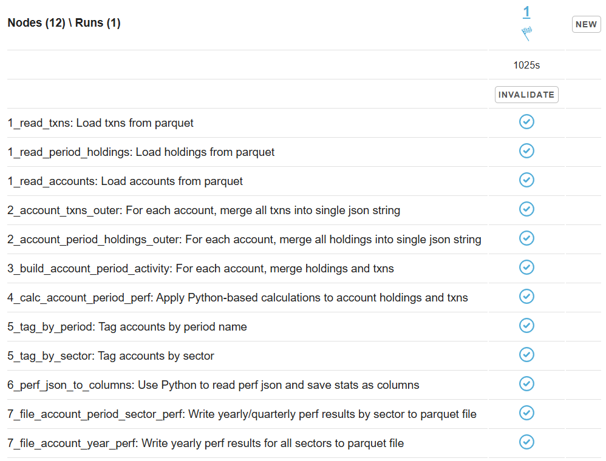
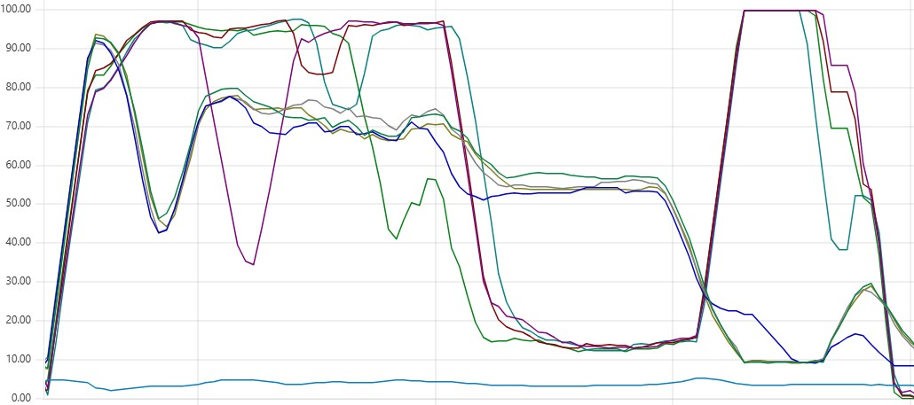
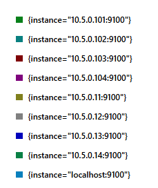
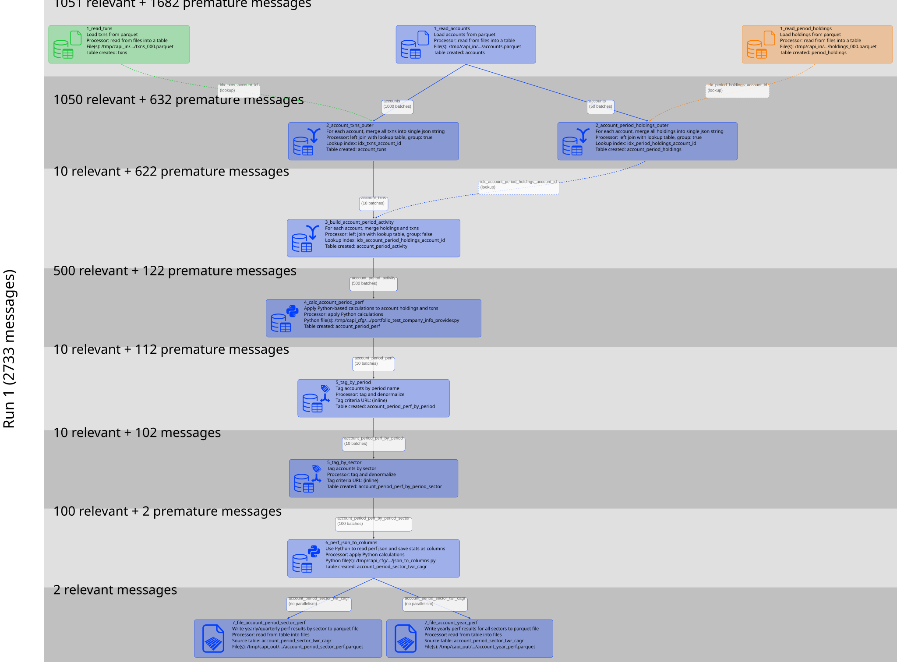
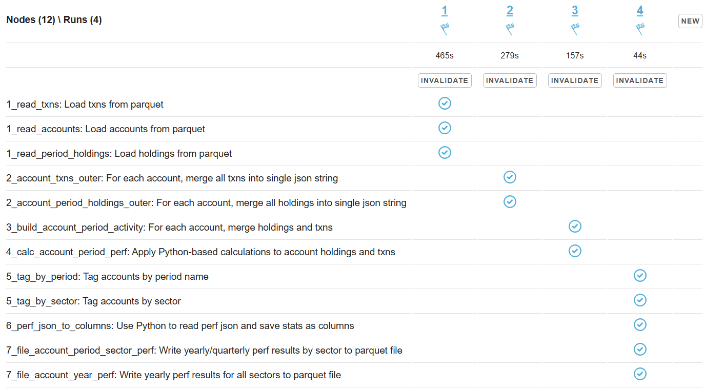
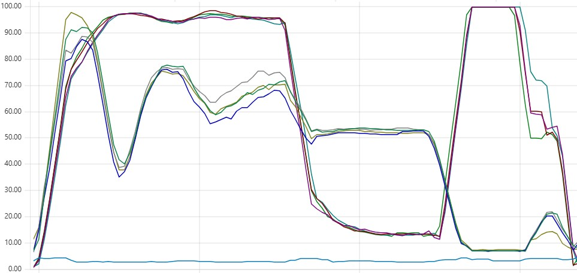
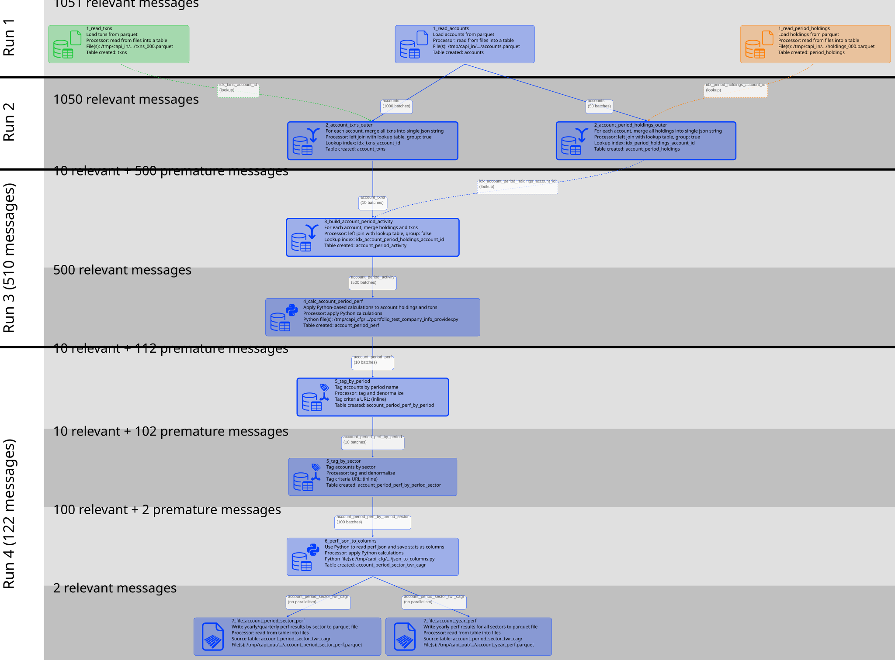

Run is one of the Capillaries cornerstones. In simple terms, a run is the process of executing one or multiple script nodes without any intervention from the operator or other external actors. Simple Capillaries scripts may use only one run. In this case, the message queue is populated with messages that instruct Capillaries to process all nodes in the script.
Sometimes it makes sense. But in other cases, this approach puts unnecessary stress on Capillaries daemons, which are asked to process nodes that are not ready yet. You can call it message pollution - the same message has to be retried again and again until the node it targets becomes ready for processing.
Let's see how bad this pollution can get and what we can do about it.
Consider this Portfolio integration test, where all nodes are handled in a single run:

The CPU load chart shows a pattern like this - some daemon instances are less loaded than their peers. Ideally, we would expect CPU load to be evenly distributed across all instances. This imbalance occurs when daemon instances, instead of performing actual data processing, spend time pulling messages from the queue only to discover that they have arrived too early and must be returned to the queue:

If you are new to Capillaries CPU load charts, start with the ARK portfolio performance calculation at (slightly bigger) scale blog post. It explains what the different sections of the chart represent: loading data, joins, Python calculations, and producing summaries.
For reference, the Prometheus legend for the chart above is as follows: Cassandra instances have IP addresses ending in 11, 12, 13, and 14; Capillaries instances end in 101, 102, 103, and 104; localhost is the bastion instance.

The chart below shows that, at each processing stage (a colored layer in the diagram), daemon instances receive two kinds of messages from the queue:
The red circles on the CPU chart above highlight places where 1,682 premature messages interfere with 1,051 relevant messages while Capillaries processes the "01_*"" nodes. Later, 122 premature messages interfere with 500 relevant messages as Capillaries finishes processing the "04_calc_account_period_perf" node.

The pattern is clear: one unlucky daemon instance pulls a long sequence of premature messages, spends time analyzing them and returning them to the queue, and only then receives the next relevant message. These premature messages create unnecessary overhead and slow down script execution.
Let's split the script node layers into four separate runs:

The overall execution time is now 465 + 279 + 157 + 44 = 945 seconds, compared to 1,025 seconds before - a promising improvement. The CPU load is also perfectly uniform across all daemon instances:

And here is the new message breakdown: relevant versus premature messages:

There is no longer any evidence of premature messages interfering with relevant ones.
Capillaries cannot rely on daemon instances to generate messages for the next processing stage because those instances can fail at any time. Creating all messages for a run in a single step (via the API call or Toolbelt) and letting the message queue handle retries is both simpler and more reliable than implementing a complex orchestration mechanism that manages the lifecycle of every message individually.
Consider this a design trade-off.
With AMQP, no.
However, we can implement a custom message queue that is smarter than a generic AMQP broker. Capillaries includes an experimental message queue broker called CapiMQ.
CapiMQ understands the internal structure of Capillaries messages - a luxury that standard message brokers do not have. When a message is returned to the queue because its target node is not yet ready, CapiMQ moves all messages for that node to the end of the queue.
As of June 2026, CapiMQ is still an experimental component and is not production-ready.